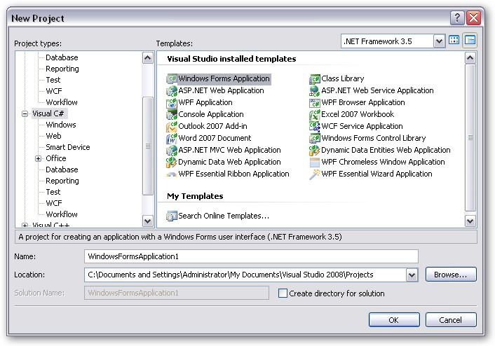
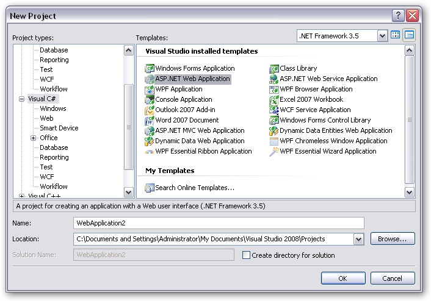
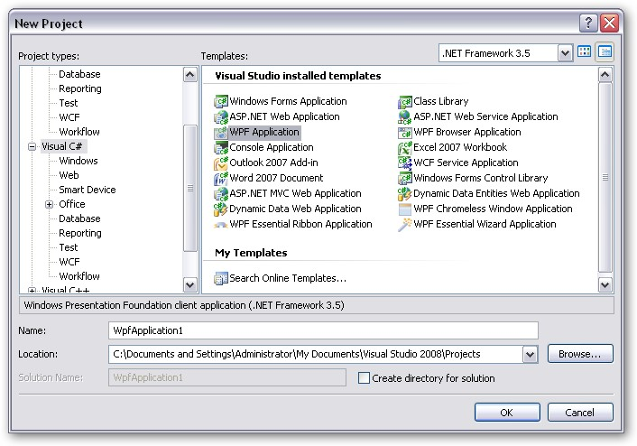

This section illustrates the step-by-step procedure to create the following platform applications.
· Windows
· Web
· WPF
· Silverlight
· ASP.NET MVC
Windows Application
1. Open Microsoft Visual Studio. Go to File menu and click New Project. In the New Project dialog box, select Windows Forms Application template, name the project and click OK.

Figure 14: New Project dialog box - Windows Forms Application
A windows application is created.
1. Open the main form of the application in the designer.
2. Add the Syncfusion controls to your VS.NET toolbox if you haven't done so already [This is done automatically when you install Essential Studio].
3. Refer Deploying Essential XlsIO topic to know how to add XlsIO to the created application.
Web Application
1. Open Microsoft Visual Studio. Go to File menu and click New Project. In the New Project dialog box, select ASP.NET Web Application template, name the web application and click OK.

Figure 15: New Project dialog box - ASP.NET Application
A Web application is created.
2. Now you need to deploy Essential XlsIO into this ASP.NET application. Refer Deploying Essential XlsIO topic for detailed info.
WPF Application
1. Open Microsoft Visual Studio. Go to File menu and click New Project. In the New Project dialog box, select WPF Application template, name the project and click OK.

Figure 16: New Project dialog box-WPF Application
A new WPF application is created.
2. Open the main form of the application in the designer.
3. Add the Syncfusion controls to your VS.NET toolbox if you haven't done so already [This is done automatically when you install Essential Studio].
4. Refer Deploying Essential XlsIO topic to know how to add XlsIO to the created application.
Silverlight Application
1. Open Microsoft Visual Studio. Go to File menu and click New Project. In the New Project dialog box, select Silverlight Application template, name the project and click OK.

Figure 17: New Project dialog box-Silverlight Application
A New Silverlight Application dialog box appears as follows.

Figure 18: New Silverlight Application dialog box
2. Click OK to host the Silverlight application in a new website.
A new Silverlight application is created.
3. Open the main form of the application in the designer.
4. Add reference to the following assemblies:
· Syncfusion.XlsIO.Silverlight.dll
· Syncfusion.Compression.Silverlight.dll
Refer Deploying Essential XlsIO topic to know how to add XlsIO to the created application.
ASP.NET MVC Application
Refer to Grid MVC -> Getting Started -> Creating an MVC application topic to know how to create an MVC application.
To know how to add XlsIO to this application, refer Adding Essential XlsIO to an MVC Application topic under Getting Started section.